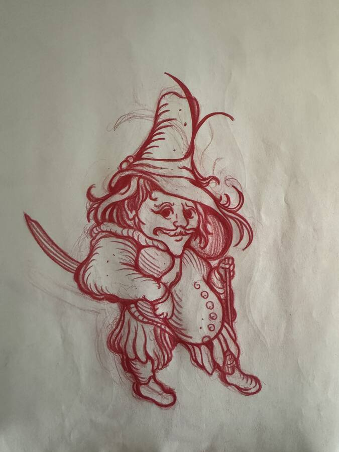

IAu crayon rouge, le soir
Le carnet
Tout commence au crayon rouge, une couleur qui ne se prend pas pour du définitif. Les pages sont montrées telles quelles, avec leurs hésitations. Les croquis deviennent des flashs ou la base d'un projet personnalisé.
« La main est le premier sujet que j'ai dessiné et celui que je n'ai jamais lâché. Elle tient, elle offre, elle menace. »Maxime
Au carnet
« Je dessine le soir, souvent à la bougie. La flamme bouge, les ombres aussi, et le trait suit. Le jour, je corrige. »
Pages du carnet



« J'aime ce qui a l'air d'avoir mille ans, même dessiné hier. »